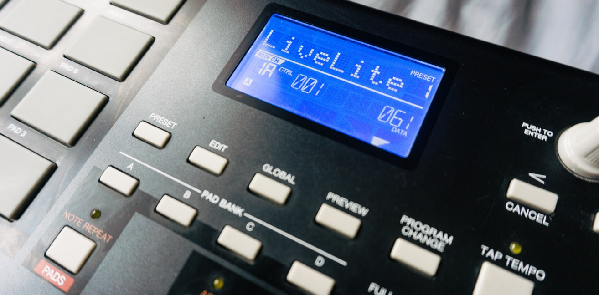
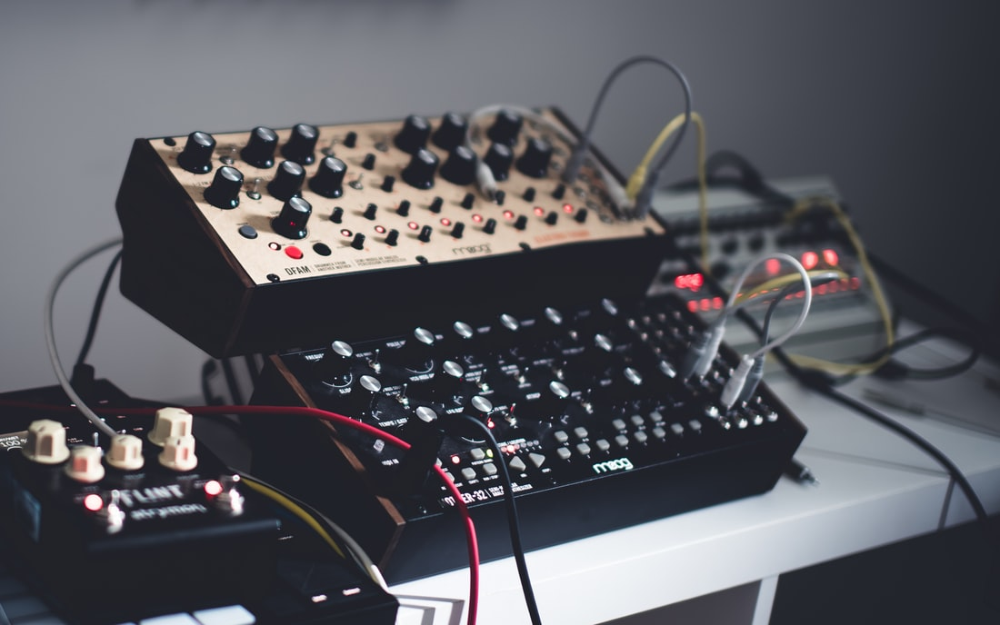
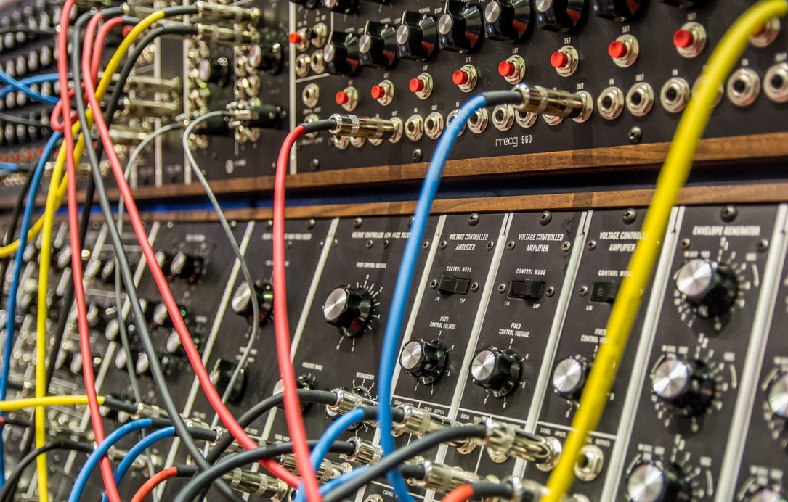

Home
Essay
Gallery
The Imagery of Black Beatmaking
1 / 3

Drum pad
2 / 3

Korg synth
3 / 3

Moog synthesizer w/wires
❮
❯
Your browser does not support the audio element.
One of the greatest Black Beatmakers:
JDILLA
2019 © by Tara Worrell